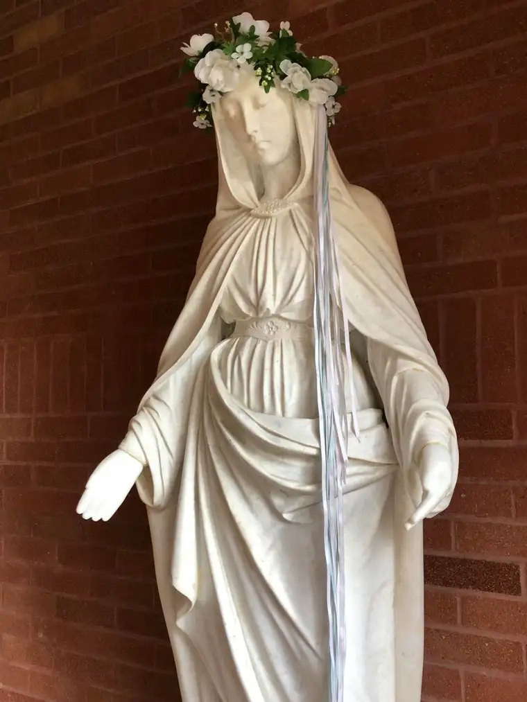

A few years ago, I finally grasped why some Christians consider Mary, Jesus’ mother, a spiritual mother to all of humanity.

Just before his death on the cross, knowing he would die soon, Jesus, seeing his mother and beloved disciple, John – and wanting to ensure neither would be alone – found the strength to speak. “Behold your son!” he said to Mary, and to John, “Behold your mother!”
Even before reading any theological opinion on this, I wondered if these words might carry more weight than some realize. Words spoken near death are often especially impactful; this would be no less true for the Son of God.
It occurred to me that Jesus likely meant his words to John for us, too.
May, mothers’ month, seems an ideal time to ponder Mary, the mother lode of mothers.
In “The Anti-Mary Exposed,” author Carrie Gress reveals the significance of Jesus’ mother today, and how we overlook Mary – or dismiss her as a saccharine, smiling, plastic statue – at our own peril.
Even secular culture acknowledges her influence. In December 2015, National Geographic named Mary “The Most Powerful Woman in the World.”
“Mary is everywhere. Marigolds are named for her. Hail Mary passes save football games. The image in Mexico of Our Lady of Guadalupe is one of the most reproduced female likenesses ever,” journalist Maureen Orth noted, pointing out the poetry, liturgy and music Mary has inspired.
Historically speaking, Mary was genius, Gress says. “It was a radically new thing that entered into fallen human history when God gave us a woman – a mortal woman, not a goddess,” she notes, and “without a major vice weighing her down. It is an idea that could only have been given to us by God.”
But, Gress says, “Our Lady’s virtues are the exact opposite of what the world has been promoting for decades.”
She quotes Father Gerald Vann, who wrote that when the wedding hosts at Cana run out of wine, Mary “does not command or urge, she suggests.” And when Jesus’ public ministry begins, “(Mary) waits; and when at the end he needs her comfort and her strength she gives it, not by saying or doing anything but…by being with him.”
They both posit something thoroughly counter-cultural here: that in her natural role, woman, as a relational creature, seeks to be of service to others, not out of coercion but love.
Mary’s secret to being able to do this, Gress says, is that she unites herself fully to God – something to which all Christians should aspire, but which is often only possible for us when the wounds of our heart have been healed. Our Lord is willing and able.

And Mary is worthy of consideration. We all need a mother, someone to dry our tears, bring hope, and guide us to God. What she did for Jesus, Mary can do for you and me. Jesus wanted this for John, and for us all.
[For the sake of having a repository for my newspaper columns and articles, I reprint them here, with permission, a week after their run date. The preceding ran in The Forum newspaper on May 4, 2019.]